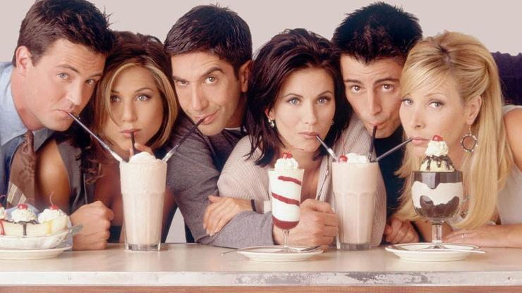
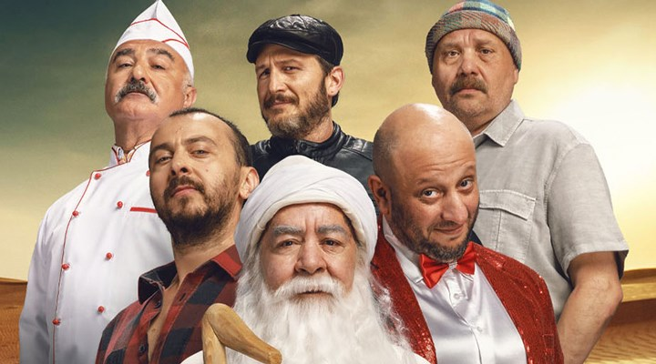

MEHMET KUBİLAY AKDEMİR
Hakkımda
Merhaba, ben M.Kubilay Akdemir.İstanbul'da yaşıyorum.Çeşitli spor bronşlarını takip etmeyi, oyun oynamaı ve dizi çok izlemeyi severim.Web geliştirme ile ilgileniyorum. Kodluyoruz 'un bu eğitim serisi sayesinde harika şeyler öğrendim ve öğrenmeye de devam ediyorum.Siz de aramıza katılın!
İlgi Alanlarım
- Takip Ettiğim Spor Branşları
- Oynadığım oyunlar
- Counter Strike:Global Offensive
- God of War
- Satranç
- En Sevdiğim Diziler

FRİENDS
Friends, David Crane ve Marta Kauffman tarafından yaratılmış Amerikan yapımı sitcom türünde bir dizidir. 22 Eylül 1994 ile 6 Mayıs 2004 tarihleri arasında NBC'de yayınlanan dizi, on sezon sürdü. Manhattan'da yaşayan bir grup arkadaşın hayatı üzerinde dönen dizi, Warner Bros. Television şirketine bağlı Bright/Kauffman/Crane Productions yapımıdır. Yönetici yapımcıları Kevin S. Bright, Marta Kauffman ve David Crane'dir.
Kauffman ve Crane, Friends'in ilk tasarımlarını Insomnia Cafe adıyla 1993'ün Kasım-Aralık aylarında hazırladı. Fikri Bright'a gösterdiler ve üçü beraber yedi sayfalık taslağı NBC'ye sundu. İsmin Friends Like Us olarak değiştirilmesi gibi pek çok senaryo değişikliği ve yeniden yazımının ardından, dizinin adı sonunda Friends olarak belirlendi.
Dizi Burbank, Kaliforniya'daki Warner Bros. Stüdyoları'nda çekildi. Tüm sezonlar ABD'de reyting listesinde ilk onda yer aldı, hatta dizinin sekizinci sezonu yayınlandığı yıl zirvedeydi. 6 Mayıs 2004'te yayınlanan final bölümü 52,5 milyon izleyiciyle ABD televizyon tarihinin en çok izlenen beşinci sezon finali;2000'lerin ise en çok izlenen dizi bölümü oldu.
Yayınlandığı dönemde birçok olumlu eleştiri alan dizi, tüm zamanların en popüler sitcomlarından biridir. Friends toplamda 62 Primetime Emmy Ödülü'ne aday gösterilmiş ve 2002'de sekizinci sezonuyla "En İyi Komedi Dizisi" ödülünü kazanmıştır. TV Guide'ın En İyi 50 TV Programı listesinde 21., Empire dergisinin "En İyi 50 TV Programı" listesinde ise 7. sıradadır. 1997'de yayınlanan "The One with the Prom Video" bölümü TV Guide'ın Tüm Zamanların En İyi 100 Dizi Bölümü listesinde 100. sırasındadır. 2013'te Writers Guild of America'nın hazırladığı "Tüm Zamanların En İyi Yazılmış 101 TV Dizisi" listesinde 24. sırada, TV Guide'ın "Tüm Zamanların En İyi 60 TV Dizisi" listesinde de 28. sırada yer alır. 2014'te Mundo Estranho dergisi Friends'i "Tüm Zamanların En İyi Dizisi" seçmiştir.
LEYLA ile MECNUN
Leyla ile Mecnun Dizisinin Aldığı Ödüller

| Yıl |
Kategori |
Ödülü Alan |
Ödülü Veren |
| 2011 |
| Yılın Dizisi |
| Yılın Dizisi |
| Yılın Erkek Oyuncusu |
| Yılın En Başarılı Dizisi |
|
| Leyla ile Mecnun |
| Leyla ile Mecnun |
| Ali Atay |
| Leyla ile Mecnun |
|
| Milliyet |
| Radikal |
| Radikal |
| İstanbul Teknik Üniversitesi |
|
|
2012
|
| En Çok İzlenen Dizi |
| En Sevilen Komedi Aktörü |
| Yılın En İyi Komedi Dizisi |
| En İyi Komedi Dizisi |
| En İyi Komedi Dizisi |
| En İyi Komedi Dizisi |
| Komedi Dizisi En İyi Erkek Oyuncu |
| Komedi Dizisi En İyi Yardımcı Erkek Oyuncu |
| En İyi Komedi Dizisi Senaristi |
| Yılın Dizisi |
|
| Leyla ile Mecnun |
| Serkan Keskin |
| Leyla ile Mecnun |
| Leyla ile Mecnun |
| Leyla ile Mecnun |
| Leyla ile Mecnun |
| Ali Atay |
| Serkan Keskin |
| Burak Aksak |
| Leyla ile Mecnun |
|
| Karadeniz Teknik Üniversitesi |
| Karadeniz Teknik Üniversitesi |
| Özel Burç Koleji |
| Esenler Belediyesi |
| OMÜ 2. Medya Ödülleri |
| Haberturk.com |
| Haberturk.com |
| Haberturk.com |
| 2012 Antalya Televizyon Ödülleri |
| Milliyet.com.tr |
|
| 2013 |
| Yılın En İyi Komedi Dizisi |
| En İyi Komedi Dizisi |
|
| Leyla ile Mecnun |
| Leyla ile Mecnun |
|
| Yarının Liderleri |
| Bilkent Üniversitesi |
|